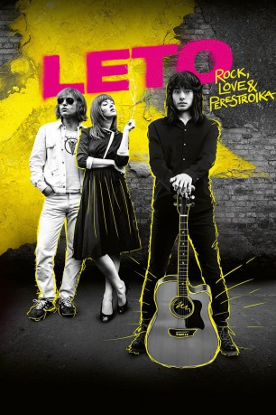

#11945 Leto
 
 IMDB-Wertung: 7.4 / 10
IMDB-Wertung: 7.4 / 10  Metascore: 69
Metascore: 69 
Leningrad, ein Sommer zu Beginn der 1980er. Während Alben von Lou Reed und David Bowie heimlich die Besitzer wechseln, brodelt die Underground-Rockszene. Mike und seine Frau Natascha lernen den charismatischen Musiker Viktor Zoi kennen. Ihre unbändige Leidenschaft für die Musik verbindet sie schnell zu einer eigenwilligen Dreieckskonstellation. Als Teil einer neuen Musikbewegung werden sie trotz staatlich kontrollierter Konzerte das Schicksal des Rock 'n' Rolls in der Sowjetunion verändern.
Jahr: 2018
Dauer: 128 Minuten
FSK: 12
Land: Russland Studio: KinovistaTonspuren: - , - , - , - , - ,
Untertitel: Deutsch,
Auflösung: 1080p (1920x800) Größe: 9994 MB
Genre: Musik, Liebe, Biographie
Regisseur: Kirill Serebrennikov
Drehbuch: Lily Idov, Michael Idov, Ivan Kapitonov, Natalya Naumenko, Kirill Serebrennikov
Soundtrack: Roman Bilyk
Darsteller:
- Teo Yoo als Viktor Tsoy
 Irina Starshenbaum als Natalia Vassilievana 'Natasha' Naumenko
Irina Starshenbaum als Natalia Vassilievana 'Natasha' Naumenko- Anton Adasinsky als Khozyain kvartiry
- Liya Akhedzhakova als Khozyayka kvartiry
- Yuliya Aug als Anna Aleksandrovna
- Filipp Avdeev als Leonid aka Liosha
- Aleksandr Bashirov als Angry man on train
- Nikita Efremov als Bob
- Anastasiya Evgrafova als
- Aleksandr Gorchilin als Punk
- Elena Koreneva als Zhenshchina v krasnom
- Aleksandr Kuznetsov als Skeptic
- Artyom Nemov als Druzhinnik
- Aleksandra Revenko als
- Semyon Serzin als Nikolai Mikhailov
- Roman Bilyk als Mayk Vassilievitch Naumenko
- S. Berdichevsky als Draftee
- Nikita Elenev als
- Aleksey Fokin als Lesha
- Ilya Karpenko als Trolleybus Passenger
- Andrey Khodorchenkov als Artyom
- Georgiy Kudrenko als
- Marina Manych als Marina
- Vasiliy Mikhaylov als Isha
- Stanislav Nikolaev als Druzhinnik
- Seva Novgorodtsev als Antiquarian
- Evgeniy Serzin als Oleg
- Denis Klyaver als Viktor Tsoy (uncredited)
Datei: X:\2018(G-M)\Leto (2018, FSK12, 1920x800).mkv seit 26.10.2019
Festplatte: HD 2018(G-Z)-2019(A-Z)
 Es gibt insgesamt 138 Filme in der Gruppe '2018(G-M)'
Es gibt insgesamt 138 Filme in der Gruppe '2018(G-M)'